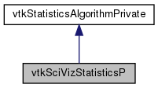

#include <vtkSciVizStatisticsPrivate.h>
Inheritance diagram for vtkSciVizStatisticsP:

Collaboration diagram for vtkSciVizStatisticsP:

Public Member Functions | |
| bool | Has (vtkStdString arrName) |
 Public Member Functions inherited from vtkStatisticsAlgorithmPrivate Public Member Functions inherited from vtkStatisticsAlgorithmPrivate | |
| vtkStatisticsAlgorithmPrivate () | |
| ~vtkStatisticsAlgorithmPrivate () | |
| void | ResetRequests () |
| int | ResetBuffer () |
| int | SetBufferColumnStatus (const char *colName, int status) |
| int | AddBufferToRequests () |
| int | AddColumnToRequests (const char *col) |
| int | AddColumnPairToRequests (const char *cola, const char *colb) |
| vtkIdType | GetNumberOfRequests () |
| vtkIdType | GetNumberOfColumnsForRequest (vtkIdType r) |
| bool | GetColumnForRequest (vtkIdType r, vtkIdType c, vtkStdString &columnName) |
| void | ResetRequests () |
| int | ResetBuffer () |
| int | SetBufferColumnStatus (const char *colName, int status) |
| int | AddBufferToRequests () |
| int | AddColumnToRequests (const char *col) |
| int | AddColumnPairToRequests (const char *cola, const char *colb) |
| vtkIdType | GetNumberOfRequests () |
| vtkIdType | GetNumberOfColumnsForRequest (vtkIdType r) |
| bool | GetColumnForRequest (vtkIdType r, vtkIdType c, vtkStdString &columnName) |
Additional Inherited Members | |
| Public Attributes inherited from vtkStatisticsAlgorithmPrivate | |
| std::set< std::set< vtkStdString > > | Requests |
| std::set< vtkStdString > | Buffer |
Detailed Description
Definition at line 27 of file vtkSciVizStatisticsPrivate.h.
Member Function Documentation
◆ Has()
|
inline |
Definition at line 30 of file vtkSciVizStatisticsPrivate.h.
The documentation for this class was generated from the following file:
- /home/utkarsh/Kitware/ParaView3/ParaView/ParaViewCore/VTKExtensions/Default/vtkSciVizStatisticsPrivate.h